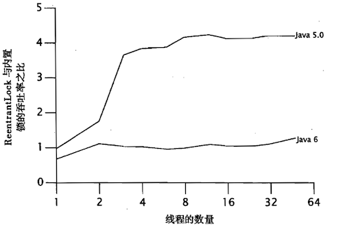

ReentrantLock源码解读
根据Javadoc的说法，
A reentrant mutual exclusion Lock with the same basic behavior and semantics as the implicit monitor lock accessed using synchronized methods and statements, but with extended capabilities.
ReentrantLock是一个类似synchronized的可重入互斥锁，拥有类似的行为和语义，以及一些扩展功能，比如公平锁、非阻塞尝试、可中断。
早年间，有传言说ReentrantLock的性能不如synchronized，不过这一点Java的架构师Brian Goetz在《并发编程实战》中作了澄清：

在Java 5.0中，当从单线程（无竞争）变化到多线程时，内置锁的性能急剧下降，而ReentrantLock的性能下降则更为平缓，因而它具有更好地可伸缩性。但在Java 6.0中，情况就完全不同了，内置锁的性能不会由于竞争而急剧下降，并且两者的可伸缩性也基本相当。
可见，ReentrantLock在性能上一直都没有落后过，如果硬要说有，那也是领先。作者还告诫“像‘X比Y更快’这样的表述大多是短暂的”。
回到正题，下面是ReentrantLock的一个典型用例。
class X {
private final ReentrantLock lock = new ReentrantLock(); // ...
public void m() {
lock.lock(); // block until condition holds
try {
// ... method body
} finally {
lock.unlock();
}
}
}
可以看到ReentrantLock需要手动显式地解锁，并且解锁要放在finally块中，确保锁得到释放。
它的核心也是AQS，一起看看如何实现的，具体的代码如下。
abstract static class Sync extends AbstractQueuedSynchronizer {
final boolean tryLock() {
Thread current = Thread.currentThread();
int c = getState();
if (c == 0) {
if (compareAndSetState(0, 1)) {
setExclusiveOwnerThread(current);
return true;
}
} else if (getExclusiveOwnerThread() == current) {
if (++c < 0) // overflow
throw new Error("Maximum lock count exceeded");
setState(c);
return true;
}
return false;
}
abstract boolean initialTryLock();
@ReservedStackAccess
final void lock() {
if (!initialTryLock())
acquire(1);
}
@ReservedStackAccess
final void lockInterruptibly() throws InterruptedException {
if (Thread.interrupted())
throw new InterruptedException();
if (!initialTryLock())
acquireInterruptibly(1);
}
@ReservedStackAccess
final boolean tryLockNanos(long nanos) throws InterruptedException {
if (Thread.interrupted())
throw new InterruptedException();
return initialTryLock() || tryAcquireNanos(1, nanos);
}
@ReservedStackAccess
protected final boolean tryRelease(int releases) {
int c = getState() - releases;
if (getExclusiveOwnerThread() != Thread.currentThread())
throw new IllegalMonitorStateException();
boolean free = (c == 0);
if (free)
setExclusiveOwnerThread(null);
setState(c);
return free;
}
// ...省略一些不重要的方法
}
Sync继承自AQS，和Semaphore一样，也有两种工作模式：公平模式和非公平模式，state表示锁重入的次数。
static final class NonfairSync extends Sync {
private static final long serialVersionUID = 7316153563782823691L;
final boolean initialTryLock() {
Thread current = Thread.currentThread();
if (compareAndSetState(0, 1)) { // first attempt is unguarded
setExclusiveOwnerThread(current);
return true;
} else if (getExclusiveOwnerThread() == current) {
int c = getState() + 1;
if (c < 0) // overflow
throw new Error("Maximum lock count exceeded");
setState(c);
return true;
} else
return false;
}
protected final boolean tryAcquire(int acquires) {
if (getState() == 0 && compareAndSetState(0, acquires)) {
setExclusiveOwnerThread(Thread.currentThread());
return true;
}
return false;
}
}
static final class FairSync extends Sync {
private static final long serialVersionUID = -3000897897090466540L;
final boolean initialTryLock() {
Thread current = Thread.currentThread();
int c = getState();
if (c == 0) {
if (!hasQueuedThreads() && compareAndSetState(0, 1)) {
setExclusiveOwnerThread(current);
return true;
}
} else if (getExclusiveOwnerThread() == current) {
if (++c < 0) // overflow
throw new Error("Maximum lock count exceeded");
setState(c);
return true;
}
return false;
}
protected final boolean tryAcquire(int acquires) {
if (getState() == 0 && !hasQueuedPredecessors() &&
compareAndSetState(0, acquires)) {
setExclusiveOwnerThread(Thread.currentThread());
return true;
}
return false;
}
}
我看这段源码时有两个疑问，initialTryLock的代码和tryLock非常像，为什么要单独设置一个initialTryLock方法？二是联系之前解读过的CountdownLatch和Semaphore，tryAcquire*和tryRelease*方法为什么一会有循环一会没循环？
首先，第一个问题，为什么要单独设置一个initialTryLock方法？从代码上看，initialTryLock在公平模式和非公平模式下各有一个实现，而tryLock只有一个非公平实现，javadoc中还专门作了说明。
…Also note that the untimed tryLock() method does not honor the fairness setting. It will succeed if the lock is available even if other threads are waiting.
同时，在tryLock的方法中也作了注释。
Acquires the lock if it is not held by another thread and returns immediately with the value true, setting the lock hold count to one. Even when this lock has been set to use a fair ordering policy, a call to tryLock() will immediately acquire the lock if it is available, whether or not other threads are currently waiting for the lock. This “barging” behavior can be useful in certain circumstances, even though it breaks fairness.
大意是为了一些特殊的场景，tryLock有意设计成非公平的，即使ReentrantLock是工作在公平模式下。initialTryLock则不然，它需要在不同的模式下表现不同的行为，在Sync中，它充当lock*方法的前置判断逻辑，即如果成功抢到锁，那么获得运行权，否则，线程排队等待。话说回来，为什么要把tryLock设计成非公平的模式呢？这和tryLock的使用场景有关，tryLock一般用在高吞吐的无线程等待的场景，搭配unlock方法使用，加锁解锁仅仅只是一些CAS操作，避免了线程的切换和等待。
第二个问题，为啥tryAcquire*方法和tryRelease*方法一会有循环，一会没循环呢？比如在Semaphore中，tryAcquireShared和tryReleaseShared都有循环，而在ReentrantLock中，tryAcquire和tryRelease都没循环。我觉得，原因和并发组件中的Sync工作模式有关。共享模式下，允许多个线程运行，因此在调用tryAcquire*争夺运行权时，势必有的线程失败，因为一次只有一个成功，但是失败了不要紧，还有机会，那些失败的可以紧接着再次尝试争夺，直到资源被争夺一空（state到达某个约定状态），那些仍然没有争夺成功的进入队伍排队。而独占模式下，因为只允许一个线程运行，大家在竞争这个资源时，失败的线程没必要再去尝试了，成功的就成功了，失败的也不要来回尝试了，因为仅有一次机会，tryRelease*同理。
但是还需要明确一点，方法中到底有没有循环，还要根据组件的方法语义来决定，比如CountdownLatch的tryAcquireShared就没有循环，因为tryAcquireShared方法是在await方法调用的，它的语义是等待，而不是争夺资源，不需要修改state。